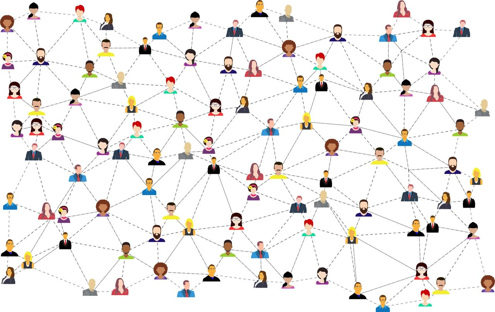
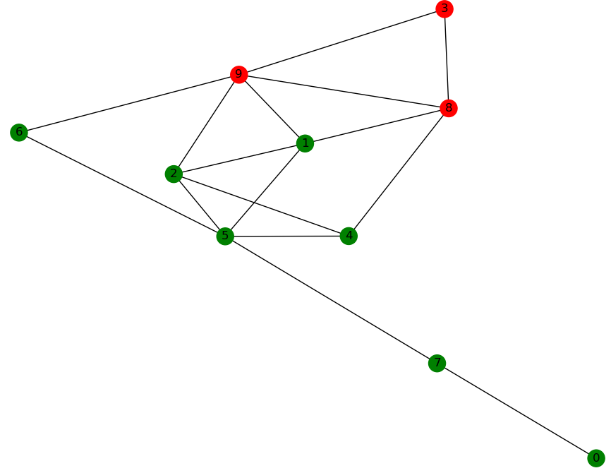
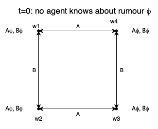
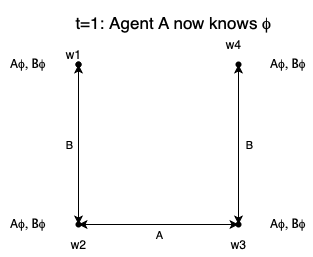
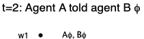
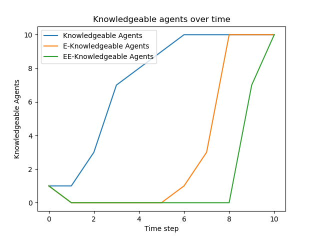

Rumours in Social Networks
Names:
Rik Vegter
Niels Rocholl
Paul Veldhuyzen

Introduction
Spreading information from human to human plays a significant role in daily human life. People spread information everyday. Sometimes we spread information to specific people in our life and sometimes we make an announcementto a broader audience. The spread of information can shape the public opinion (Galam, 2003) and therefore analyzing how information spread within a community is an interesting and actual topic in research.
Goal of the project
In this project we will look at the speed of information spread in different social network structures. Specifically, we will look at how quickly every person in the network knows about the rumour. A more detailed and precise definition of the network will be given in the next section. In this study we will not only look at how fast knowledge spreads within a social network, we will mainly look at the moment when second order shared knowledge is achieved. Second order shared knowledge can be seen as 'Everybody knows that everybody knows φ''.
Details of the social network
We define a social network to consist of N agents. Every agent is connected to at least 1 other agent and at most N-1 agents. Connections between agents are always bidirectional. The simulation starts with an injection of a rumour φ in a random agent (which we call agent 0). This happens at epoch 0. This means that after epoch 0, this agent knows φ. At epoch 1, agent 0 spreads the rumour to all its neighbors. Two agents are neighbors if they are connected. Not only does an agent spread φ, agents also spread the set of agents that know φ according to their belief. We call this set of agents M. This will be clarified in the example below.
Example
Consider a fully-connected social network with 4 agents. At epoch 0, a rumour φ is injected in the network at agent 1. At epoch 1, agent 1 spreads the rumour to agent 2, 3 and 4. Since agent 1 got the rumour injected, it does not know any other agents that know φ. Therefore M is empty. At epoch 2 all agents know φ. However, not all agents know that everyone knows φ. At epoch 2 three things happen:
- Agent 2 spreads to agent 1, 3 and 4 φ and M = {agent 1, agent 2}
- Agent 3 spreads to agent 1, 2 and 4 φ and M = {agent 1, agent 3}
- Agent 4 spreads to agent 1, 2 and 3 φ and M = {agent 1, agent 4}
After epoch 2 the knowledge of every agent is (duplications in the knowledge of agents are deleted):
- Agent 1: φ, M = {agent 1, agent 2, agent 3, agent 4}
- Agent 2: φ, M = {agent 1, agent 2, agent 3, agent 4}
- Agent 3: φ, M = {agent 1, agent 2, agent 3, agent 4}
- Agent 4: φ, M = {agent 1, agent 2, agent 3, agent 4}
This means that every agent knows φ and every agent knows that every agent knows φ. In theory we could infinitely repeat this process in order to achieve common knowledge. However, this is not possible to model. Therefore we chose to stop at second order shared knowledge. An example of a state of the network is given in the following picture, here red nodes know the rumour while green nodes do not. Here agent 3 started with the rumour and has now spread this rumour to agents 9 and 8, in the following step the rumour will spread to agents 1, 2, 4, and, 6.

Kripke model of a social network simulation (step by step)
In this paragraph we will go through a simple simulation and we will create a Kripke model for every epoch. This walkthrough consists of 2 agents, A and B and rumour φ. The two agents are connected and the rumour φ is injected in agent A after epoch 0. This Kripke model assumes an S5 systems. This also means that an agent knows that it does not know φ (A5) which is an important assumption.
Epoch 0
At epoch 0 neither agent A nor agent B know φ. The Kripke model for epoch 0 is shown in Figure XXX This model shows that both agents consider worlds where they do or do not know φ. They also both consider worlds where the other agent does or does not know φ. The fact that the agents consider these worlds is a direct result of (A5). Informally, this means that the agents know that they do not know φ. However, this is not a realistic scenario because how can you know that you do not know something in the first place? This is one of the main arguments against the S5-system when dealing with a real-life scenario.

Epoch 1
At this point in time, agent A knows φ. However, agent B does not know φ yet. Agent A knows φ but it does not know whether agent B knows φ. Therefore agent A loses its relation between $w_1$ and $w_2$ and the Kripke model looks like Figure XXX.

Epoch 2
Agent A has spread Agent A has spread φ to all its neighbours, which is agent B. Because agent A told φ to agent B, now all agents know φ. Since agent A told agent B φ, KAKBφ. Since agent B heard φ from agent A, KBKAφ. This can also be proven from the Kripke model shown in Figure XXX. to all its neighbours, which is agent B. Because agent A told φ to agent B, now all agents know φ. Since agent A told agent B φ, KAKBφ. Since agent B heard φ from agent A, KBKAφ. This can also be proven from the Kripke model shown in Figure XXX.

Measurements
As previously mentioned we want to measure how quickly rumour φ spreads and when second order shared knowledge is achieved. For the final project we want to compare different social network initializations with each other. More specifically, we want to look at the number of epochs needed for second order shared knowledge for different social network initializations. An example of knowledge spread over time is given in the following graph. These are the results for a run in the above network with 10 agents and a mean number of connections per agent set to 2.

References
Galam, S. (2003). Modelling rumors: the no plane Pentagon French hoax case. Physica A: Statistical Mechanics and Its Applications, 320, 571-580.
ISO 690